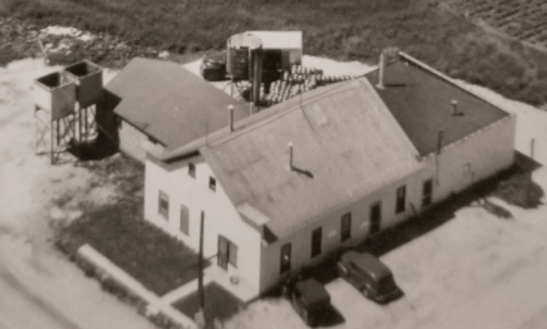
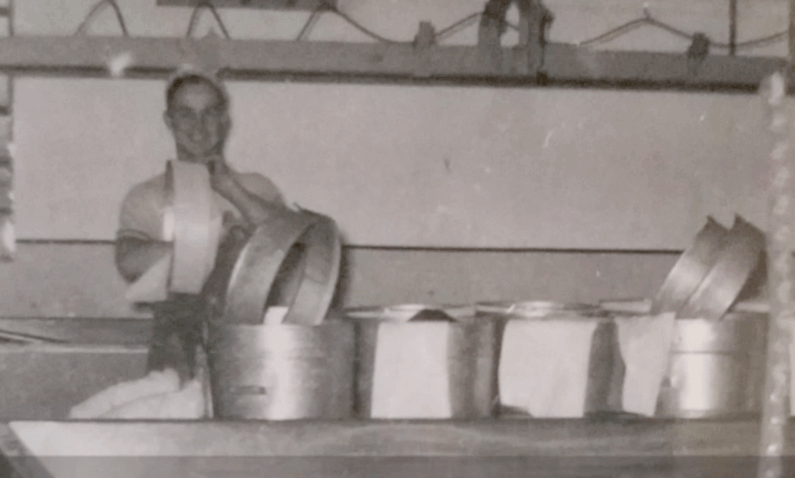

<!DOCTYPE html>
<html lang="en">
  <head>
    <!-- Required meta tags -->
    <meta charset="utf-8" />
    <meta
      name="viewport"
      content="width=device-width, initial-scale=1, shrink-to-fit=no"
    />

    <!-- Webfonts -->
    <link rel="stylesheet" href="./assets/css/all.min.css" />

    <!-- All CSS -->
    <link rel="stylesheet" href="./assets/css/bootstrap.min.css" />
    <link rel="stylesheet" href="./assets/css/owl.carousel.min.css" />
    <link rel="stylesheet" href="./assets/css/style.css" />

    <!-- User's CSS Here -->
    <link rel="stylesheet" href="./assets/css/custom.css" />
    <link rel="stylesheet" href="./assets/css/responsive.css">

    <title>CVC Website</title>
  </head>
  <body>
    <!-- Header strat -->
    <header class="header-section">
      <div class="container-fluid text-xl-right">
        <div class="row">
          <div class="col">
            <ul class="nav justify-content-end mr-15">
              <li class="nav-item">
                <a href="#" class="nav-link">
                  
                </a>
              </li>
              <li class="nav-item">
                <a href="#" class="nav-link">
                  
                </a>
              </li>
            </ul>
          </div>
        </div>
      </div>
      <div class="container">
        <div class="row">
          <div class="col">
            <a href="./index.html"
              ></a>
          </div>
        </div>
      </div>
    </header>
    <!-- Header end -->

    <!-- Navbar start -->

    <nav id="navigation" class="nav-section navbar navbar-expand-lg py-3">
      <div class="container">
        <button
          class="navbar-toggler"
          type="button"
          data-bs-toggle="collapse"
          data-bs-target="#navbarSupportedContent"
          aria-controls="navbarSupportedContent"
          aria-expanded="false"
          aria-label="Toggle navigation"
        >
          <span class="navbar-toggler-icon"><i class="fas fa-bars"></i></span>
        </button>
        <div class="collapse navbar-collapse" id="navbarSupportedContent">
          <ul class="nav navbar-nav mx-auto mb-2 mb-lg-0">
            <li class="nav-item">
              <a
                class="nav-link active"
                aria-current="page"
                href="./index.html"
                >Home
              </a>
            </li>
            <li class="nav-item">
              <a class="nav-link" href="./about.html">About</a>
            </li>
            <li class="nav-item">
              <a class="nav-link" href="./product.html">Products</a>
            </li>
            <li class="nav-item">
              <a class="nav-link" href="#">Warehouse</a>
            </li>
            <li class="nav-item">
              <a class="nav-link" href="#">Cheese Store</a>
            </li>
            <li class="nav-item">
              <a class="nav-link" href="#">Contact</a>
            </li>
          </ul>
        </div>
      </div>
    </nav>
    <!-- Navbar End -->

    <main>
      <!-- Banner start -->
      <section id="about" class="about-banner">
        <!--  -->
      </section>    
      <!-- Banner end -->
      
      <!-- About content start -->
      <section class="about-content">
        <div class="container">
          <div class="row">
            <div class="col-md-8">
              <article class="about-bio">
                <h2>ABOUT</h2>
                <p class="lead">
                 <p> The cream is purchased by Grassland Dairy and made into
                  butter. The Whey is shipped to Milk Specialties Global in Fond
                  du Lac and processed into protein which is then used in sports
                  energy drinks and pharmaceutical products. Most of this
                  protein is exported all over the world.</p><br>
                  <p>Cedar Valley Cheese
                    receives milk daily from over 110 local farmers throughout 8
                    counties. The company processes 1,500,000 pounds of milk
                    daily, which produces over 165,000 pounds of cheese.</p><br> 
                    <p>Cedar
                      Valley Cheese has received the Seal of Excellence Award at the
                      State Fair 5 times for their String Cheese. (1998, 1999, 2000,
                      2002, & 2003) They also gained a red ribbon on their Provolone
                      in 2002 and a red ribbon on their mozzarella in 2003. In 2017,
                      they won a Bronze medal for their smoked Provolone, which
                      ranked it 3rd in the Nation.</p>
                </p>
              </article>
            </div>
            <div class="col-md-4">
              <aside>
                
                
              </aside>
            </div>
          </div>
        </div>
      </section>
            <!-- About content end -->
    </main>

       <!-- Footer strat -->
       <footer class="footer-section">
        <div class="container">
          <div class="row f-direction d-flex justify-content-center align-items-center">
            <div class="col-sm-12 col-md-8 col-lg-10 ">
              <p class="lead">
                Cedar Valley Cheese, Inc., W3115 Jay Rd, Belgium, Wisconsin 53004
                • 920-994-4415
              </p>
            </div>
            <div class="col-sm-12 col-md-4 col-lg-2 mt-3">
              <div class="footer-logo">
                <a href="./index.html">
                  </a>
              </div>
            </div>
          </div>
        </div>
      </footer>
      <!-- Footer end -->

    <!-- JS -->
    <script src="./assets/js/jquery-3.6.0.min.js"></script>
    <script src="./assets/js/bootstrap.min.js"></script>
    <script src="./assets/js/owl.carousel.min.js"></script>
    <script src="./assets/js/scripts.js"></script>
  </body>
</html>
